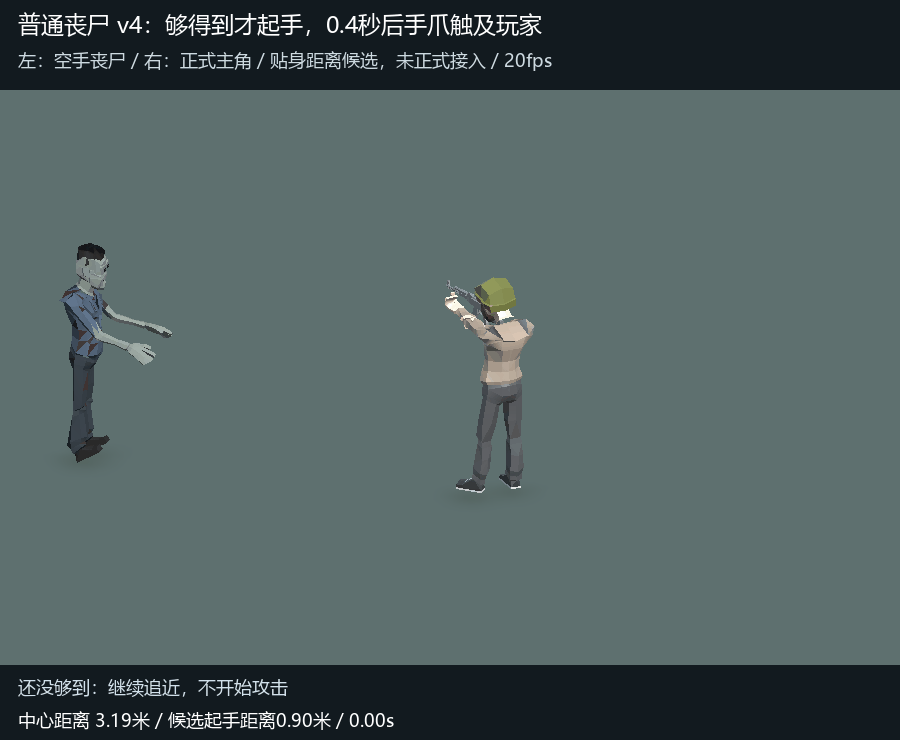
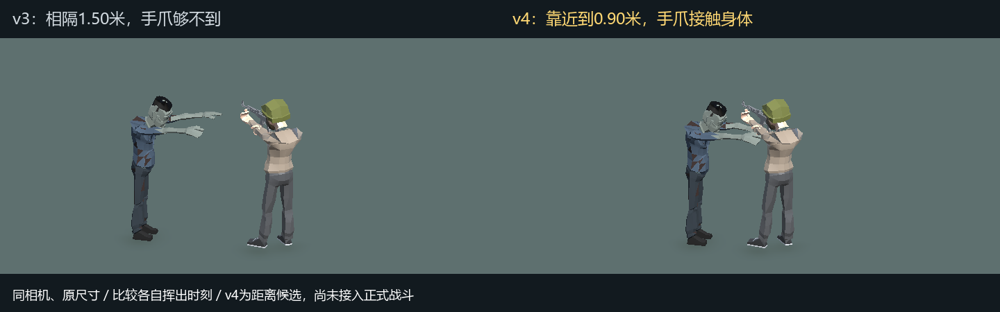
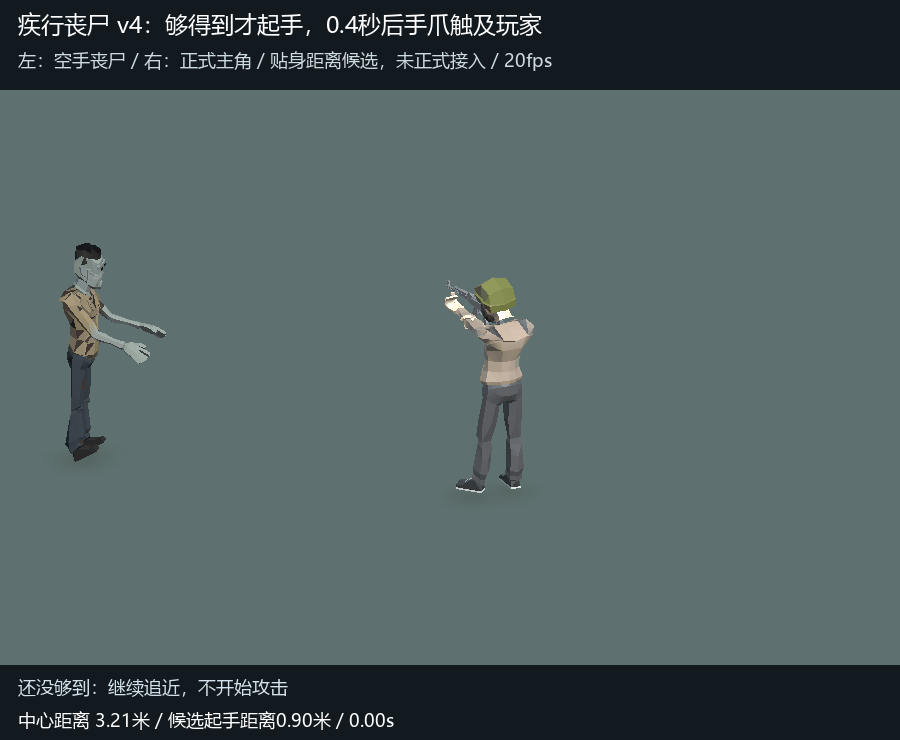
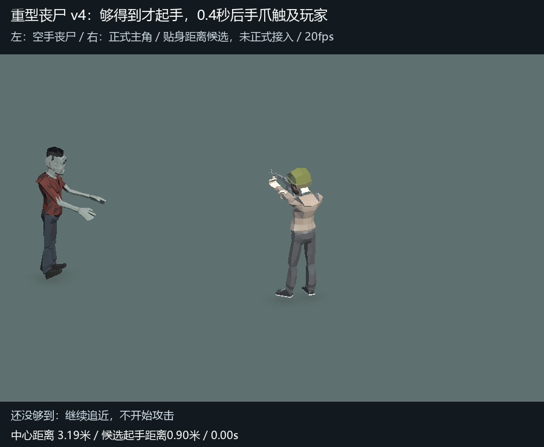

已保留大幅动作；这次先贴近，挥出时碰到玩家
旧预览在中心距离1.5米时起手，画面里手爪够不到。此版候选缩到0.9米才允许起手：先追近，再开始完整0.4秒前摇，挥出触及身体；玩家提前跑开则取消。大幅后拉、前抓、内撕方向保持。
贴近、接触、跑开取消

挥出时刻的接触对比

另外两类丧尸的接触表现


本页是正式模型克隆的距离候选。前摇调用正式规则函数，但0.9米门禁及停步是临时预览输入，尚未修改正式攻击距离或接入正式动画，不是完整实战录像。每段5秒、20fps，角色保持原尺寸。三种丧尸接触时手指到主角网格最近距离约0.2～1.8厘米；范围外起手0次，第二段各取消1次。